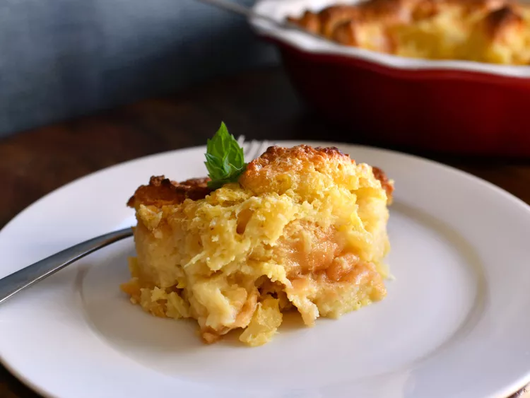

Scalloped Pineapple Souffle

Description
This is a wonderful pineapple dish to be served with ham.
It is a favorite at Easter in my family. The egg whites add a touch of lightness to it.
Ingredients
- 3 eggs, whites and yolks separated
- 1 ½ cups white sugar
- ½ cup butter
- ½ cup milk
- 1 (15 ounce) can crushed pineapple, drained
- 3 cups cubed bread